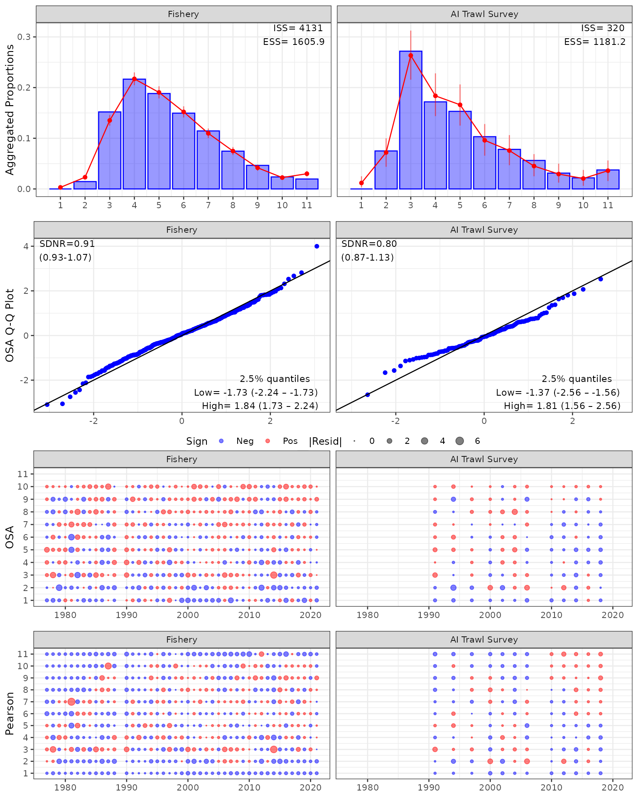

Getting started with {afscOSA}
To get started you’ll need to install afscOSA, which
also relies on {compResidual}. To install these libraries
from Github, using the following commands:
# downloading compResidual:
# https://github.com/fishfollower/compResidual#composition-residuals for
# installation instructions
# TMB:::install.contrib("https://github.com/vtrijoulet/OSA_multivariate_dists/archive/main.zip")
# remotes::install_github("fishfollower/compResidual/compResidual", force=TRUE)
# remotes::install_github("noaa-afsc/afscOSA", force=TRUE)
library(afscOSA)In this vignette we show how to afscOSA with an AMAK ADMB model using the BSAI Atka mackerel assessment model as an example.
Once the data is loaded, the general workflow is as follows:
Structure the observed and predicted age/length compositions as matrices with
nrows= number of years andncols= number of age or length bins.Calculate OSA residuals for each fleet using
run_osa(). See details for inputs and outputs by running??run_osa().Plot OSA residuals and aggregate fits for one or more fits using
plot_osa(). Input toplot_osa()is a list of output(s) fromrun_osa(). See more details by running??plot_osa.
# load Atka mackerel data
amrep <- afscOSA::bsaiamrep
amdat <- afscOSA::bsaiamdat
# fishery
ages <- 1:11
yrs <- amrep$pobs_fsh_1[,1]
obs <- amrep$pobs_fsh_1[,2:12]
exp <- amrep$phat_fsh_1[,2:12]
N <- amdat$sample_ages_fsh
out1 <- run_osa(fleet = 'Fishery', index_label = 'Age',
obs = obs, exp = exp, N = N, index = ages, years = yrs)
# survey
yrs <- amrep$pobs_ind_1[,1]
obs <- amrep$pobs_ind_1[,2:12]
exp <- amrep$phat_ind_1[,2:12]
N <- amdat$sample_ages_ind
out2 <- run_osa(fleet = 'AI Trawl Survey', index_label = 'Age',
obs = obs, exp = exp, N = N, index = ages, years = yrs)
input <- list(out1, out2)
osaplots <- plot_osa(input) 
plot_osa(input)

# extract individual figures for additional formatting:
# osaplots <- plot_osa(input, plot = FALSE)
# osaplots$bubble
# osaplots$qq
# osaplots$aggcomp